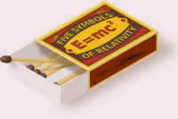
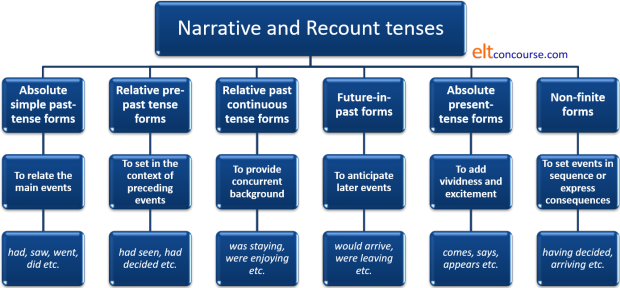
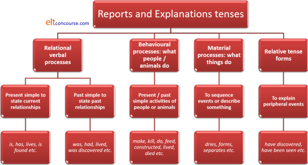

Tense and genre

A good deal of attention has been lavished on analysing, for
example, narrative tenses and attempting to categorise them in terms
of their structures and grammatical characteristics. This
guide takes a rather different view: it looks at tense forms in
terms of their functions rather than their structures. If you
need to find a guide to analysing the forms of tenses themselves,
consult the general
index of tenses.
This guide focuses on two general text types in which the use of
tense forms plays a crucial communicative role: recounts and
narratives and descriptive or explanatory texts.
Before we begin, however, we need to get two concepts clear:
- The distinction between finite and non-finite forms
- The distinction between relative and absolute tense forms
 |
Finite and non-finite forms |
|
Having waited by the harbour for a while, the men decided to go to the pub. |
In the sentence above there are two tense forms:
- having waited:
This is a non-finite form because it carries no marker for tense or person. The reader / hearer needs to infer when and about whom the phrase refers. In this case, the we can easily infer that the waiting preceded the decision to go to the pub and that both events occurred in the past and we can conclude that it was the men who waited. We conclude that, however, from the rest of the sentence, not from the verb phrase itself. We can also have, for example:
Having waited so long, I'm happy to stay a little longer
in which we can infer that the waiting is related to something happening now and is still going on in the present. We can also infer that the speaker / writer has done the waiting.
Having arrived at the airport, you will see the sign for our offices on the left of the main entrance
in which the events are set in order, in the future and refer to the reader / hearer.
Having seen the film, he had already decided not to go with his friends so he stayed at home
in which the seeing of the film precedes an event in the past and that event precedes the decision and that in turn precedes the staying at home.
Other non-finite forms are:
The bare infinitive in, e.g.:
They should see the film
The to-infinitive in, e.g.:
I want to see the film
The -ed / -en participle:
Broken, the machine was useless
The audience was left bored - the men decided:
This is a finite tense form because it is marked for time with the -ed suffix telling us that it is in the past. In English, past tenses are not marked for person in any verb except the deeply irregular be (which has was and were to mark number but still not persons) but they are in many languages which inflect to show both person and tense. In German, for example:
I stole = ich stahl
you stole = du stahlst
we stole = wir stahlen
and these are all examples of a finite verb being marked both for time and for person.
Other marked finite forms in English are, for example:
He goes to work by car
which is marked for tense (present) and person (third-person singular -es ending).
I had succeeded
which is marked for time in two ways (the form of have and the non-finite -ed ending).
I'm going tomorrow
which is marked as a present intention concerning the future and in the first person because of the non-finite -ing ending and the finite form of be, am.
For more on the distinction between finite and non-finite forms, see the guide linked in the list of related guides at the end.
|
|
Absolute and relative / relational tenses |
|
They had waited by the harbour for a while, and decided to go to the pub. |
In the example above, there are two distinct types of tense forms, both finite:
- they had waited
This is a relative or relational tense form because we can only understand the time at which this event takes place by reference to the co-text. From that we can infer that the waiting preceded the decision to go to the pub. It is the past embedded in the past.
Other relational tense forms include:
She has arrived and is apologising for her lateness
in which we can infer that the arrival preceded the apology. It is the past embedded in the present.
I was walking to the pub when I met John
in which we can infer that the walking preceded the meeting (and, quite possibly continued after it).
I was going to go to the pub when the telephone rang
in which we can infer that the future intention was thwarted in some way and was not fulfilled. It is the future embedded in the past. - decided to go to the
pub
Here we have an absolute tense form and do not need a context to know that the event is set in the past and is previous to the here and now.
Other absolute tense forms include:
She is waiting in her office
in which we know that the action is set in the present.
I will speak to her tomorrow
in which we know that the action is set in the future.
For more on the distinctions between and forms of absolute and relational tenses, see the guide to tense forms linked in the list of related guides at the end.
Now we have these two fundamental concepts clear, we can get on to
looking at what tense forms are likely to occur in a range of
genres.
Texts, whether written or spoken, belong to the same genre when they
share a common social purpose. Different social purposes will
lead to the construction of texts with a range of identifying
features. Here we are only concerned with tense forms but the
types of verb (i.e., what they do), the kinds of circumstances
(i.e., how they are modified) and so on will all be affected by the
social purpose the text is designed to fulfil.
For more, see the guide to verbal processes and the guide to
circumstances, both linked in the list of related guides at the end.
 |
Narratives and recounts |
A narrative is distinguished from a simple recount because it is structured to be entertaining and/or instructive whereas a recount simply sets out a series of events. The distinction between the two text types can be set out like this:
| Recount | Narrative | |||
| Orientation | who, where when etc. | Orientation | who, where, when etc. | |
| Chronological statement of events | what happened | Complication | events that produce a crisis or problem | |
| Summary | what the outcome was | Resolution | how the problem was resolved | |
| Coda | personal reaction | Coda | personal evaluation | |
It is clear from this table that the `distinction between these two text types lies in the central aspect of the text: the complication and its resolution. Without those aspects, a text does not qualify as a narrative at all.
In fact, Labov and Waletzky (1967), identify the stages of a narrative rather more precisely, like this:
| Stage | Content | |
| 1 | Abstract | what the story is about |
| 2 | Orientation | who, where, when etc. |
| 3 | Complication | the core of the narrative which tells us the point of its relation |
| 4 | Evaluation | this is the So, what? of the story and tells us how the participants felt and reacted |
| 5 | Resolution | how the problem was resolved and what finally happened |
| 6 | Coda | personal evaluation which may be a moral or a lesson |
 |
Other types of recount |
Lambrou (2007), drawing on Plum (1988) identifies two other forms of recount which also do not qualify as narratives, lacking, as they do, the critical complication-resolution stages. They are:
- Anecdote
which usually concerns a remarkable (to the teller) event of some kind followed by a personal reaction to it. - Exemplum
which is a record of an event followed by an interpretation of its generalisability.
Although the overall structures and the ways in which the
information is delivered (i.e., staged) differ, the tense forms that
we use in all these text types are reasonably similar so, while we still
need to bear the differences firmly in mind, we can make some
generalisations which apply to the subgenres.
Here's how:
The absolute past: nailing things down |
Almost by definition, recounts and narratives are set in the past and usually the speaker / writer will take pains to orientate the reader quite precisely to the time(s) of the event and its location(s) with something like:
This happened to me last year when I was on holiday in Japan. It was June and the weather was really fine.
or
In 1815, Napoleon escaped from imprisonment on the island of Elba and returned to the French mainland.
The text may go on in this vein using solely simple past, absolute tense forms but that leads to a rather unsophisticated, not to say dull, text such as:
This happened to me last year when I was on holiday in Japan. It was June and the weather was really fine. I was in a hotel in Tokyo and went on an excursion to the countryside. I took a train to Kyoto and stayed in a traditional hotel in that city.
or
In 1815, Napoleon escaped from imprisonment on the island of Elba and returned to the French mainland. He met the Fifth Regiment near Grenoble and they joined him on a march to Paris. He arrived in Paris in March and took over power from the king.
So, the central characteristic of both recounts and narratives is that the main structural events of the story which lend it its coherence are realised through a series of simple, absolute past tense forms. However, to make texts more interesting, we need a number of other structures.
|  |
Relative / relational tense forms: linking ideas |
Relative or relational tense forms are generally tangential to the main events of the story and are used in three main ways:
- To introduce some perspective in terms of the events preceding the main story without which the reader / hearer cannot set it in context. Past perfect tense forms perform this function most commonly. For example:
I had been staying at a hotel in Tokyo when I decided to take an excursion to Kyoto, a city I had always wanted to visit.
or
Napoleon had abdicated the throne on 4th April 1814 and had been imprisoned by the British on the island of Elba. There, he plotted his escape.
- To provide descriptive background, again tangential to the main events, but in order to give some colour and context. Continuous or progressive tense forms commonly perform this function. For example:
Tokyo was beginning to get warm and humid and I was getting tired of the busy, modern city so I went on an excursion to Kyoto.
or
Napoleon was ruling the island of Elba and was instituting a new legal code as well as developing the island's industry when he escaped to the mainland of Europe.
- To anticipate later events in the story which bear upon the events being written of / spoken about. Future in the past forms are commonly used to realise this function. Additionally, forms with the modal auxiliary verb would are frequently deployed for the same effect. For example:
I was going to leave Japan in three weeks and would not have a chance to travel here again so I wanted to see more of the country before I left
or
Napoleon was never going to be satisfied with a life of obscurity on the island of Elba and would always represent a threat to the monarchy in France.
Present (non-past) tense forms |
Present tenses (especially simple, absolute ones) are often used instead of past tenses either to set the scene or to make the events more vivid and exciting. For example:
This story of mine takes place in Japan, where I am staying at a hotel in Tokyo.
or
Europe in 1815 is exhausted by 23 years of almost unbroken warfare and Napoleon is finally in exile on the island of Elba.
Present tenses can also be used to make even the events of a narrative (especially) or a recount more gripping and exciting. For example:
So, I arrive in the rain in Kyoto and it's very late, of course. It's difficult to find my hotel in the middle of the night. Suddenly a taxi appears and I flag it down. What a relief!
or
Napoleon sees his chance and daringly escapes to Europe. Ney rushes to meet him and they embrace when they meet outside Grenoble.
 |
Non-finite forms |
Non-finite verb forms perform similar functions:
- To set the events in terms of the recent past, -ing forms, both present and perfect are often deployed. For example:
Having become a little bored with the congestion and modernity of Tokyo, I took an excursion to Kyoto. Arriving there, I was delighted by the peaceful atmosphere.
or
Despairing of his life on Elba, Napoleon escaped to the mainland. Having done so, he immediately marched north.
- To express consequences and reasons as well as to catenate verbs linking actions and events in a series, to-infinitives and -ing forms are often deployed. For example:
I became bored waiting around in Tokyo so I decided to get out of the city to see something of the rest of Japan. Hoping to get a taste of traditional Japan I settled on going to Kyoto first.
or
Napoleon became dissatisfied with ruling a small island in the Mediterranean Sea and resolved on escaping to mainland France to recover his empire. Meeting up there with his old comrade Ney, he marched on Paris, gathering support as he went.
As a check for you, there's an easy matching test here.
 |
Descriptions |
Two forms of descriptive texts concern us here: Reports and Explanations. They are similar in terms of tense use so we can treat them together but, for the record they can be distinguished like this:
| Reports | Explanations | |||
| General statement and categorisation | what this is about what it is |
Identifying statement | what is being explained | |
| Description in parcels | characteristics | Chronological description | how it happens | |
Essentially, only two tense forms concern us in this area.
 |
The present for presenting |
Present simple tenses are most frequently used because both types of descriptive text are generally presented as being constant, i.e., absolute, truth. Two types of verbs are used in this way.
- Relational verbs which relate one thing to another are most commonly found in descriptions rather than explanations. For example:
An alligator is a crocodilian in the genus
Alligator of the family Alligatoridae. The two living species
are
the American alligator (A. mississippiensis) and the Chinese
alligator (A. sinensis). Additionally, several extinct species of
alligator are known from fossil remains.
...
Alligators have muscular, flat tails that propel them while
swimming.
Wikipedia
In this extract, we are told how one thing is related to another
(through the use of the verb be) and the tense is simple present because the facts apply generally,
not specifically tied to time.
The second part tells us the relationships between parts of the
animals and what constituents they have (through the use of the verb
have).
- Behavioural process verbs which tell us what things do or what is done are common to both descriptions and explanations. For example:
[Alligators] may kill larger prey by
grabbing
it and dragging it into the water to drown. Alligators
consume food
that cannot be eaten in one bite ... by biting and then
spinning or
convulsing wildly until bite-sized chunks are
torn off.
...
When young, alligators eat fish, insects, snails, crustaceans, and
worms. As they mature, progressively larger prey is
taken, including
larger fish such as gar, turtles, and various mammals, particularly
coypu and muskrat, as well as birds, deer, and other reptiles.
...
In summer, the female builds a nest of vegetation where the
decomposition of the vegetation provides the heat needed to
incubate
the eggs.
Ibid
And, again, you can see that present tense forms are exclusively used.
Or, using more material rather than behavioural processes because the subjects are generally inanimate so do not 'behave' in any real sense:
There are several steps in the brewing
process, which may include malting, mashing, lautering, boiling,
fermenting, conditioning, filtering, and packaging.
Malting is the process where barley grain is made ready for brewing.
Malting is broken down into three steps in order to
help to
release
the starches in the barley. First, during steeping, the grain is
added to a vat with water and allowed to
soak for approximately 40
hours. During germination, the grain is spread out on the floor of
the germination room for around 5 days. The final part of malting is
kilning when the malt goes through a very high temperature drying in
a kiln; with gradual temperature increase over several hours.
Ibid
However, the verb forms for explanations usually involve frequent
(and sometimes sole) use of simple present passive forms because it is the material
process on which the focus is put rather than the activities (i.e.,
behaviours) which is most central to what is being described.
Catenation of verb forms is common.
 |
Relative / relational tenses |
Relative or relational tenses are almost invariably present and are used in two ways:
- To set the subject of the description in context and describe peripheral facts (asides, in a sense). For example:
Alligators have also been observed to rise up
and balance on their hind legs and semi-step forward as part of a
forward or upward lunge.
...
Alligators, much like birds, have been shown to exhibit ...
Ibid
or
Beer may have been known in Neolithic Europe
as far back as 5,000 years ago, and was mainly brewed on a domestic
scale.
...
a few brewers have produced gluten-free beer
Ibid
- To show sequences in an explanation. For example:
When a beer has been brewed using a cool
fermentation of around 10°C ... then stored for several weeks (or
months) at temperatures close to freezing point, it is termed a
"lager".
Ibid
 |
Past forms |
Some descriptions, naturally, are of events, locations, things or people in the past and some processes are explained although they are no longer in use. In these cases, the verb forms are used in the same way but the past forms are selected for obvious reasons so we may have, for example:
By the 16th century, cannon were made in a
great variety of lengths and bore diameters, but the general rule
was that the longer the barrel, the longer the range.
Ibid
or
While dinosaurs were ancestrally bipedal, many
extinct groups included quadrupedal species, and some were
able to
shift between these stances.
Ibid
|
|
Non-finite verb forms |
These sort of texts often use non-finite verb forms, often catenative, to set sequences of events in order, to suggest causality and provide background. For example:
Having determined the most
useful lengths and bores of on-board cannons, the Navy Board settled
on six categories of cannon by the beginning of the war.
Being nocturnal the animal
had very large light-capturing eyes and an acute sense of smell.
The beer is left to ferment for up to four days before being drawn off into vats.
and so on.
As a check for you, there's an easy matching test here.
Summaries


| Related guides | |
| tenses | this is the general introduction only with links to analysing the structures of individual tenses in English |
| the tenses index | this page contains links to all guides in the area of tense and aspect |
| verbal processes | a guide to what verbs do |
| circumstances | a related guide explaining how verbs are modified in this kind of analysis |
| finite and non-finite forms | a guide to the difference |
| catenative verbs | for a guide to how verbs are linked in chains of meaning |
| tense forms | for a guide which explains relative and absolute tenses in more detail |
| genre | for an overview of the most frequently encountered text types and a link to some teaching ideas |
References:
Butt, D, Fahey, R, Feez, S, Spinks, S and
Yallop, C, 2001, Using Functional Grammar: an
explorer's guide, Sydney NSW: NCELTR
Labov, W and Waletzky, J, 1967, Narrative analysis: Oral versions of
personal experience. In: Helm, J (ed), Essays on the verbal and
visual arts (pp 12-44), Seattle, WA: University of Washington Press
Lambrou, M, 2007, Oral Accounts of Personal Experiences: When is a
Narrative a Recount? In: Lambrou, M and Stockwell, P (Eds.)
Contemporary Stylistics, (pp. 303-322), London, UK: Continuum
Lock, G, 1996, Functional English Grammar, Cambridge:
Cambridge University Press